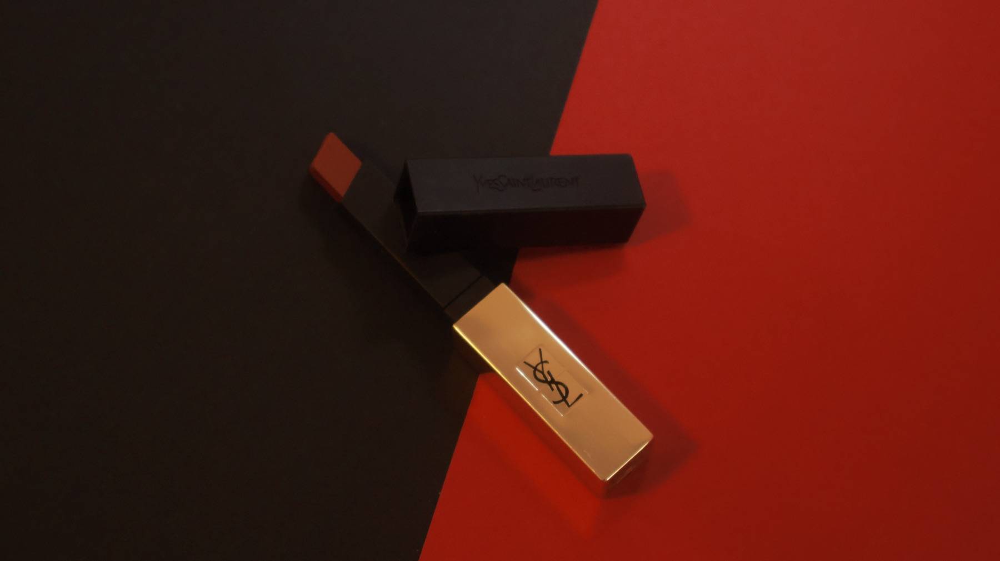
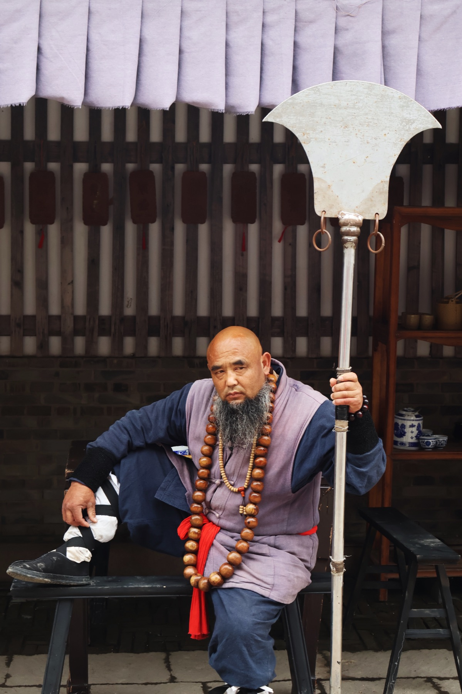
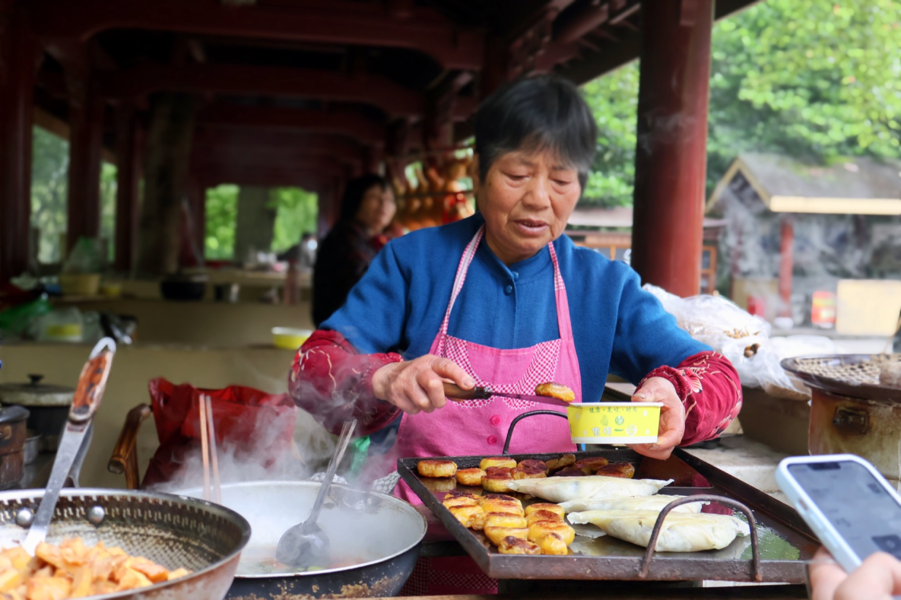
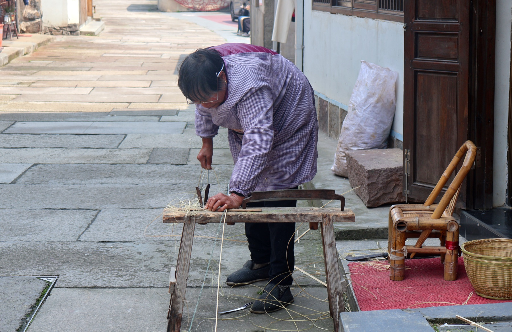
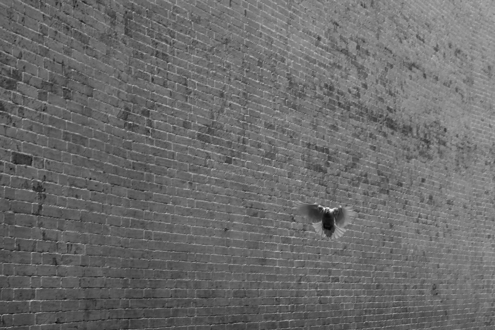

01 商业 Commercial
以商品为主角的视觉练习—— 在静物间寻找质感、光形与节奏， 用最少的元素表达最完整的产品性格。

口红静物。柔光打底，金属壳的反射控制在低位，让品牌符号与材质语言同时被读到。
同一主体的另一构图。改变光位与背景明度，比较两版叙述节奏的差异。

酒类商业静物。以深色背景压低画面情绪，让酒液在杯壁形成层次清晰的折光与色温过渡。
02 人物 Portrait
人物摄影的关键不在「拍清楚」，而在「拍准确」—— 准确的眼神、准确的距离、准确的留白。

人物正面取景。以自然光主导，强调皮肤质感与情绪的稳定度。

偏纪实路线的人物。不打断对象的状态，让镜头退到一臂之外，等一个真实的瞬间。
03 纪实 Documentary
街头与日常的纪实—— 在不被预设的现场， 保持对气氛、节奏与人事关系的敏感。

纪实场景。以稳定的曝光把空间与人物压在同一层叙事里。

「飞鸽」。等待与预判同时进行——快门按下的那一刻，正是鸟群与空气最稳定的关系。
04 说明 Colophon
- 题材
- 商业静物 · 人物 · 人物纪实 · 街头纪实
- 担当
- 策划 / 布光 / 拍摄 / 后期
- 风格
- 克制的色彩 · 稳定的取景 · 重视细节的质感